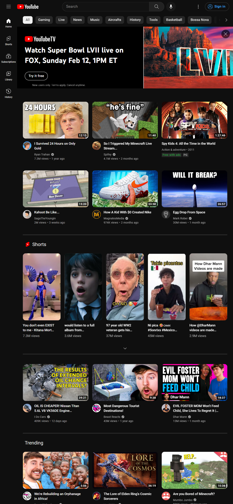

Visual Hierarchy
Nike
Nike.comNike does a wonderful job when it comes to visual hierarchy. In the screenshot pictured above, you can see that there are a few prominent things that they want to draw your eyes to. First, simple quotes that connect the customer to the product that are boldly designed and are the first things you look at. Then you have simple buttons that link to mens shopping and womens shopping, which are simple, easy to read, and help you know where to go next. Of course there is supplmental text that sums up the entire first page, but the most important things they want are highlighted first.
Hick's Law
McDonald's
McDonalds.comMcDonald's is a master when it comes to Hick's Law. Hicks law states that the more content options available to a user, the longer it will take for them to make a decision. McDonald's has a clear end goal for each of their mobile customers: to get on the McDonald's app and start buying food. By making there be so few options on the screen with little "background noise" so to speak, they quickly channel or push all users towards the McDonald's app. This also makes it easier for the user to navigate quickly towards an option as there isn't a lot of content to process.
Fitt's Law
Youtube
Youtube.com Lastly we have Youtube which easily falls into Fitt's Law. Fitt's law focuses on the time and distance a user's mouse will move before it can easily select a target. Youtube does a great job of making it easy to select different videos on their platform by making a bunch of video banners be the entire page, making it so a user can easily see a bunch of content, be able to easily select multiple videos to watch without moving the cursor a great distance, and the video banners are also large enough that the user won't easily misclick on one video while triyng to click another.